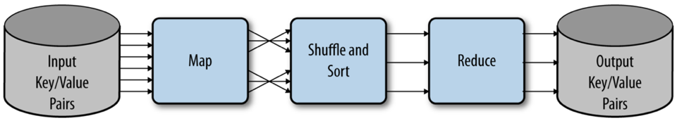
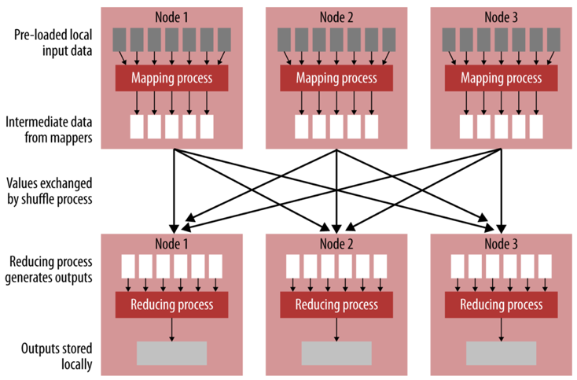
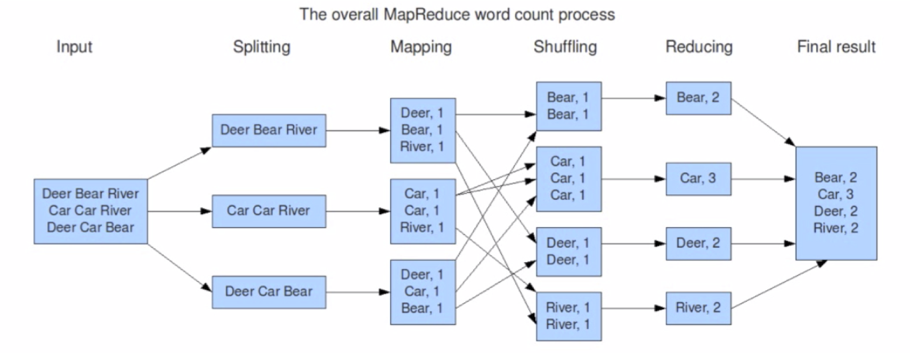
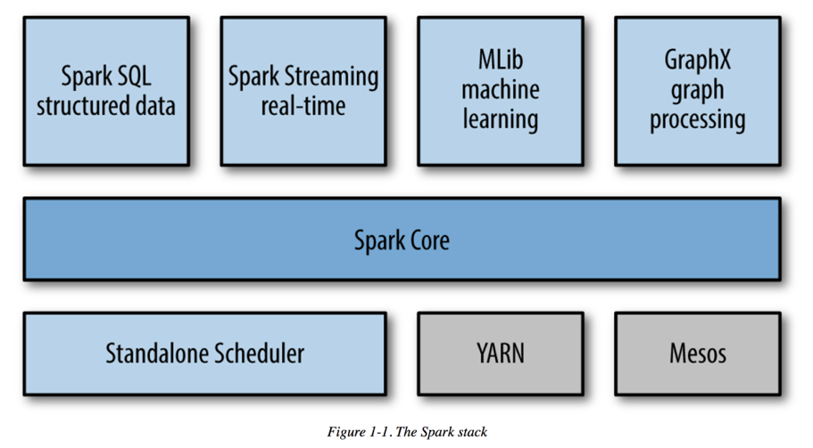
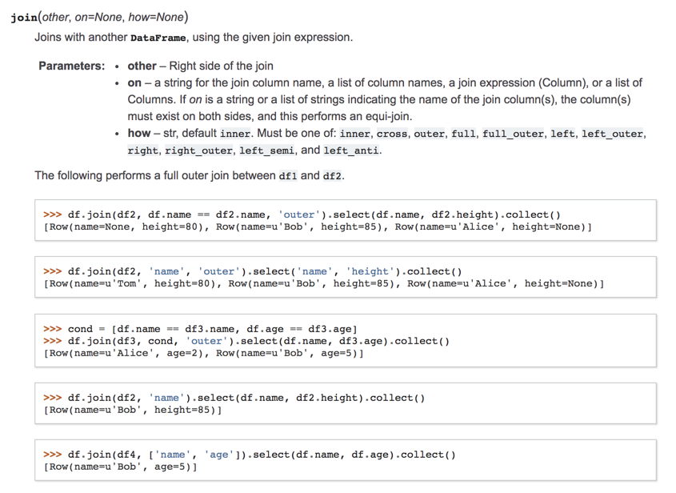
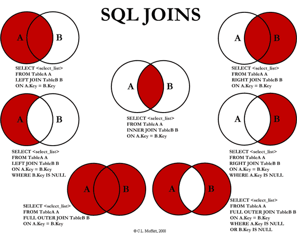

This work is licensed under a Creative Commons Attribution-NonCommercial-ShareAlike 4.0 International License.
This work is licensed under a Creative Commons Attribution-NonCommercial-ShareAlike 4.0 International License.
Big Data, Predictive Analytics and Deep Learning with Apache Spark
Chris Teplovs, Ph.D.
Day 1
Day 1 Overview
| Segment | Topic |
|---|---|
| 1.1 | Workshop overview and Introductions |
| 1.2 | Introduction to Databricks |
| 1.3 | Hands-On: Databricks |
| 1.4 | Intro to Spark & DataFrames |
| 1.5 | Hands-On: DataFrames |
| 1.6 | Big Data Sets |
| 1.7 | Hands-On: Exploring Data |
Introduction to Databricks
Why Databricks?
- Consistent, predictable environment for this Workshop
- free, 6GB AWS cluster (small but capable)
- plays well with S3 (and other AWS services)
- we'll be using S3 to access data
Jupyter notebooks
- open-source project
- create and share code and documentation
- supports many languages: we will be using python
- we will also be using Markdown functionality
- part of the "Pydata" stack
- based around interactive, literate and reproducible computing
From Python to Databricks notebooks
- Python
- IPython
- Jupyter
- Databricks
Note: see also Zeppelin notebooks.
Scripts vs. Notebooks
- different mindset
- scripts: end-to-end program, often well-factored
- notebooks:
- code fragments
- good for data exploration
- cells can be run out of sequence
Databricks notebooks
- Jupyter-like notebook that is tuned for Spark (more on that soon)
- Note "Run cell" functionality (Shift-Enter) as well as "Run all"
- Remember: the notebook instance is running on a (modest) AWS cluster
Data Collection Survey
https://umich.qualtrics.com/jfe/form/SV_3JBVoyZzHYms5KJ
Spark
Distributed Computing
- vertical vs. horizontal scaling
- what's your limit?
- computing time (weeks? days? minutes?)
Key requirements of distributed systems
- Fault tolerance
- Recoverability
- Consistency
- Scalability
MapReduce
A different way of thinking about solving problems
- dividing a big problem into smaller steps
- those steps can proceed in parallel (i.e. independently)
- the results of those steps can be combined efficiently
An example: adding numbers
An example: adding numbers
32 + 12 + 23 + 4 + 7 + 21 + 19 + 32 + 3 + 11 + 88 + 23 + 1 + 93 + 5 + 28 = ?
An example: adding numbers
32 + 12 + 23 + 4 + 7 + 21 = ?
19 + 32 + 3 + 11 + 88 = ?
23 + 1 + 93 + 5 + 28 = ?
------
?
MapReduce
MapReduce
Another example: counting words
Deer Bear Car Car Car River Deer Car Bear
MapReduce
MapReduce: conditions
- data are row-based
- manipulation of each row is independent of the manipulation of other rows
- manipulations can be easily combined
MapReduce Keys
- keys are not unique
- used to combine (reduce) elements with the same key
- contrast to python dictionaries, in which keys are unique
Typical MapReduce Workflow
- read (a lot of?) lines of data
- optionally split the lines into units of analysis (e.g. words)
- map each unit of analysis to a key-value pair (usually a tuple) (e.g. (word, 1))
- reduce the tuples by some operation like addition
- emit (e.g. print) the reduced values
Spark
- Spark is a "general-purpose distributed computing abstraction"
- focus on computation (rather than storage)
- provides an interactive shell (PySpark)
- good IPython and Jupyter integration
- all about parallelization
- very "lazy"
Spark
- up to 100x fast than Hadoop MapReduce
- written in Scala, providin Scala, Java and Python APIs
- support batch and real-time processing
- write once, run many places: Hadoop, Mesos, standalone, cloud, etc.
- one of the most active Apache Software Foundation projects
- not just for Big Data!
Spark
Spark APIs
- Resilient Distributed Datasets (RDDs)
- DataSets
- DataFrames
Resilient Distributed Datasets (RDDs)
- relatively low-level
- direct access to mapping, reducing, sorting, etc.
- commonly used by data professionals
- not our focus for this workshop
DataSets
- distributed collection of data
- only available via Scala or Java (i.e. no Python API)
- not our focus for this workshop
Spark DataFrames
- our main focus will be Spark DataFrames
- DataFrames are Spark DataSets organized into rows and columns
- on other words, they're tables
- conceptually very similar to pandas and R DataFrames
DataFrames: Getting Started
- all interaction os via a SparkSession object
- SparkSession == entry point to programming with Spark DataFrames
- represents an abstract connection to a computing back-end (and more!)
- Databricks provides a SparkSession in a variable called
spark
Creating Spark DataFrames
Once you have a SparkSession (reminder: variable spark
in Databricks is a SparkSession), a DataFrame can be created from:
- a list
- an RDD
- a JSON file
Creating a DataFrame from a list
If using a list of tuples, include a list of column names; if using a list of values, specify value type:
df_from_other_list = spark.createDataFrame(
[('Chris',67),('Frank',70)], [‘name','score'])
df_from_other_list.show()
from pyspark.sql.types import FloatType
df_from_list = spark.createDataFrame(
[1.0,2.0,3.0,4.0,5.0], FloatType())
df_from_list.show()
Create a DataFrame from a JSON file
# read a specially formatted JSON file (one JSON object per line)
df = spark.read.json("business.json")
# Displays the content of the DataFrame to stdout
df.show()Inferring Schema
df.printSchema()root |-- address: string (nullable = true) |-- attributes: struct (nullable = true) | |-- AcceptsInsurance: boolean (nullable = true) | |-- AgesAllowed: string (nullable = true) | |-- Alcohol: string (nullable = true) | |-- Ambience: struct (nullable = true) | | |-- casual: boolean (nullable = true) | | |-- classy: boolean (nullable = true) | | |-- divey: boolean (nullable = true) | | |-- hipster: boolean (nullable = true) | | |-- intimate: boolean (nullable = true) | | |-- romantic: boolean (nullable = true) | | |-- touristy: boolean (nullable = true) | | |-- trendy: boolean (nullable = true) | | |-- upscale: boolean (nullable = true) | |-- BYOB: boolean (nullable = true)
Creating a DataFrame from a file
Spark can load a number of different formats: json, parquet, jdbc, orc, libsvm, csv, text
df = spark.read.load("examples/src/main/resources/people.json", format=“json")Column selection
df.select("name").show()+--------------------+ | name| +--------------------+ | Dental by Design| | Stephen Szabo Salon| |Western Motor Veh...| | Sports Authority| |Brick House Taver...| | Messina| ... only showing top 20 rows
Filtering
# Select businesses with 4 or more stars
df.filter(df['stars'] >= 4).show()Grouping and sorting
# Count businesses by stars
df.groupBy("stars").count().show()# Count businesses by stars and sort the output
df.groupBy("stars").count().sort("stars",ascending=False).show()
Explode
df = spark.createDataFrame([('Chris',[67,42]),('Frank',[70,72])],['name','scores'])
df.show()+-----+--------+ | name| scores| +-----+--------+ |Chris|[67, 42]| |Frank|[70, 72]| +-----+--------+
Explode
df = df.withColumn('score',explode('scores')).show()
+-----+--------+-----+ | name| scores |score| +-----+--------+-----+ |Chris|[67, 42]| 67 | |Chris|[67, 42]| 42 | |Frank|[70, 72]| 70 | |Frank|[70, 72]| 72 | +-----+--------+-----+
when... otherwise
import pyspark.sql.functions as F
df.withColumn('good', F.when(df['score'] > 50,1).otherwise(0)).show()DataFrames can be joined
SQL Joins
SQL without a "real" database
- How about a SQL interface to your data (without actually loading the data into a database)?
df.createOrReplaceTempView("businesses")
sqlDF = spark.sql("SELECT * FROM businesses")
sqlDF.show()SQL Review
SELECT [Columns] FROM [Tables]
WHERE [Filter Condition]
ORDER BY [Sort Columns]